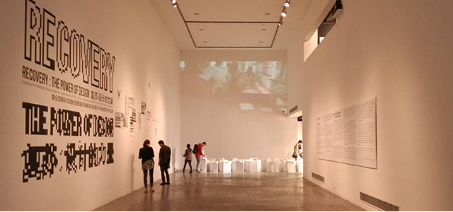

高中生为啥能被牛津大学录取能被牛津大学录取？
7年前，我第一次到访英国牛津，6年前，住在牛津大学的边缘地带，3年前，幸运的以学生的身份回到这里，对牛津城和这所大学的情感也一点点的累积，试着将这个作为在这里回答的第一个问题。牛津大学的概况就不必赘述了，51offer学校广场等都很容易找到，但一般能找到的内容无非是有多少位诺贝尔奖，大主教，国王首相外国首脑等等，但体验是一种感性的反馈而非客观的数据，所以，在此作一番展开。

7年前，我第一次到访英国牛津，6年前，住在牛津大学的边缘地带，3年前，幸运的以学生的身份回到这里，对牛津城和这所大学的情感也一点点的累积，试着将这个作为在这里回答的第一个问题。牛津大学的概况就不必赘述了，51offer学校广场等都很容易找到，但一般能找到的内容无非是有多少位诺贝尔奖，大主教，国王首相外国首脑等等，但体验是一种感性的反馈而非客观的数据，所以，在此作一番展开。